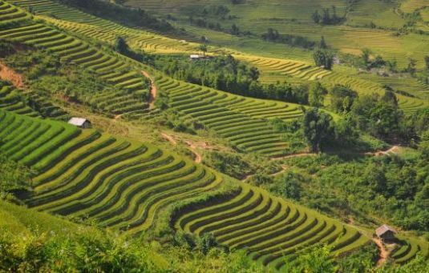

Terraced Fields
Sapa is one of the most beautiful spots in Vietnam. Sapa is known for its beautiful terraced fields on the mountains. The views are amazing, especially in the morning mist.
Sapa is one of the most beautiful spots in Vietnam. Sapa is known for its beautiful terraced fields on the mountains. The views are amazing, especially in the morning mist.